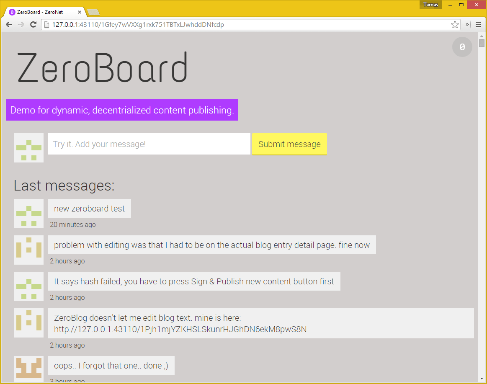
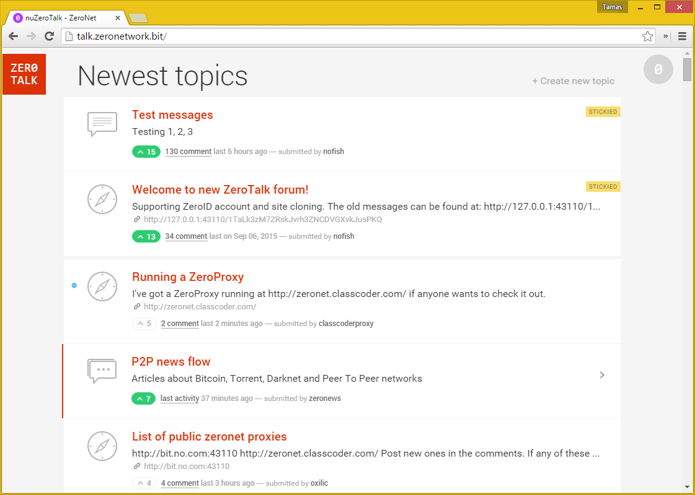
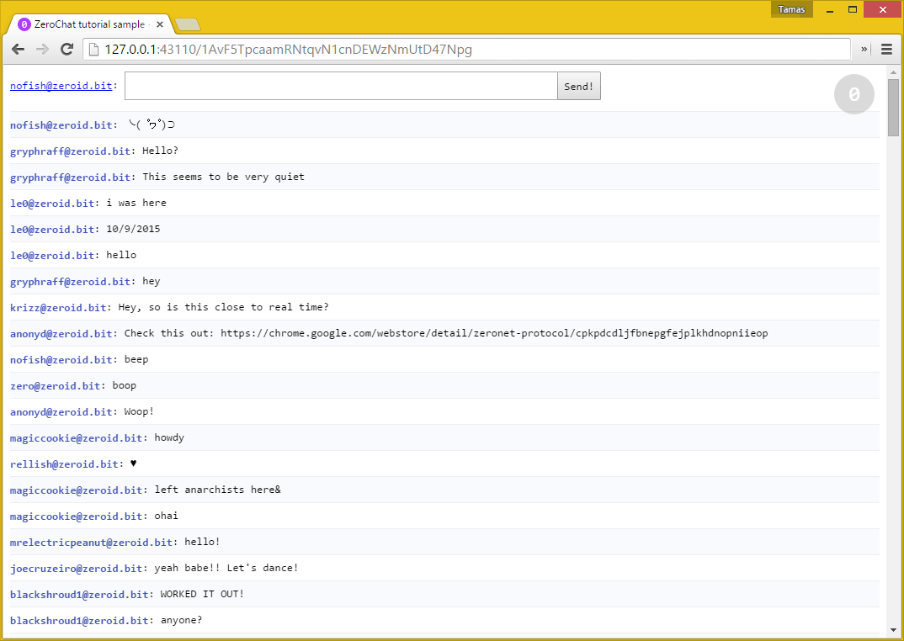

样例 ZeroNet 站点
ZeroHello
ZeroNet 的首页
- 列出所有添加的站点：标题、节点数、修改时间
- 站点操作：更新、暂停、恢复、删除
- 通过克隆站点来拥有你自己的博客/论坛
- 如果有新版本可用一键更新 ZeroNet

地址：1HeLLo4uzjaLetFx6NH3PMwFP3qbRbTf3D
ZeroBoard
动态内容分发的样例消息版演示
- 利用用户的 auth_key 生成的动态头像
- 实时消息更新
它是如何工作的？
- 你发送你的消息到站点私钥拥有者的机器人上
- 机器人更改
message.json文件，使用私钥将它签名并发布到其他节点 - 如果站点更改到达你的客户端，消息就会出现在你的浏览器中

地址：1Gfey7wVXXg1rxk751TBTxLJwhddDNfcdp
ZeroBlog
自发布博客演示
- 内联内容编辑器
- Markdown 语法
- 代码语法高亮
- 只使用 web 界面来实现站点签名并发布
它是如何工作的？
- 你能使用 Web 界面编辑
data.json文件 - 通过按
Sign & Publish new content按钮它会问你站点私钥（当你 使用 zeronet.py siteCreate 命令 创建一个新站点它将显示） - 你的 ZeroNet 客户端签名新增和更改的文件并直接发布到其他节点
- 你的站点只要还有至少 1 个节点活动就可被访问

地址：1BLogC9LN4oPDcruNz3qo1ysa133E9AGg8 or blog.zeronetwork.bit
ZeroTalk
分布式的，P2P 论坛演示
- 话题和消息的创建、更改、删除
- 话题和消息点赞
- 当请求更改站点权限时，只需要与站点所有者联系一次。
- 评论和内容更改直接被推送到其他节点
- 只有你能签名和更改你的文件
- 实时显示新评论
他是如何工作的？
- 要与网站进行交互，你必须向一个 ZeroID 提供者申请注册证书（一个密码学标志）
- 在你有证书后你能直接发布你的内容（消息、话题、点赞）到其他节点

地址：1TaLkFrMwvbNsooF4ioKAY9EuxTBTjipT 或 talk.zeronetwork.bit
ZeroMail
端对端加密的、分布式的 P2P 消息站点。为了改善隐私保护它使用了类似于比特信的解决方案并且不会公开邮件收件人。
- 使用 ECIES 来进行密钥交换，AES256 来进行消息编码
- 当你首次访问这个站对面时它将添加你的公钥到你的数据文件，以后任何人可以给你发送一条消息
- 每个人尝试解密每条消息，使得找到消息接收者变得不可能来改进隐私保护
- 为了减少每条消息的头部开销并加快解密速度我们重用了 AES 密钥，但是每次创建一个新的 IV

地址：1MaiL5gfBM1cyb4a8e3iiL8L5gXmoAJu27 或 mail.zeronetwork.bit
ZeroChat
完成的站点教你创建一个不依赖服务器的、SQL 后端的、实时更新的 P2P 聊天应用，使用 ZeroNet 少于 100 行代码
- 选择 ZeroID 证书
- 存储数据在一个 SQL 数据库
- 创建自己的消息并直接实时分发到其他用户
- 实时更新到达的消息

完成的站点地址：1AvF5TpcaamRNtqvN1cnDEWzNmUtD47Npg
Tutorial on ZeroBlog: Part1, Part2
ZeroMe
去中心化的、类似于 Twitter 的 P2P 社交网络。
- 在 ZeroMe user registry 存储用户信息
- 在被称作 Hub 的合并站点中存储帖子和评论
- 上传图片并作为可选文件
- 实时显示活动信息流

地址：1MeFqFfFFGQfa1J3gJyYYUvb5Lksczq7nH
ReactionGIFs
可选文件的样例，视频文件只有在浏览器请求时才被下载。